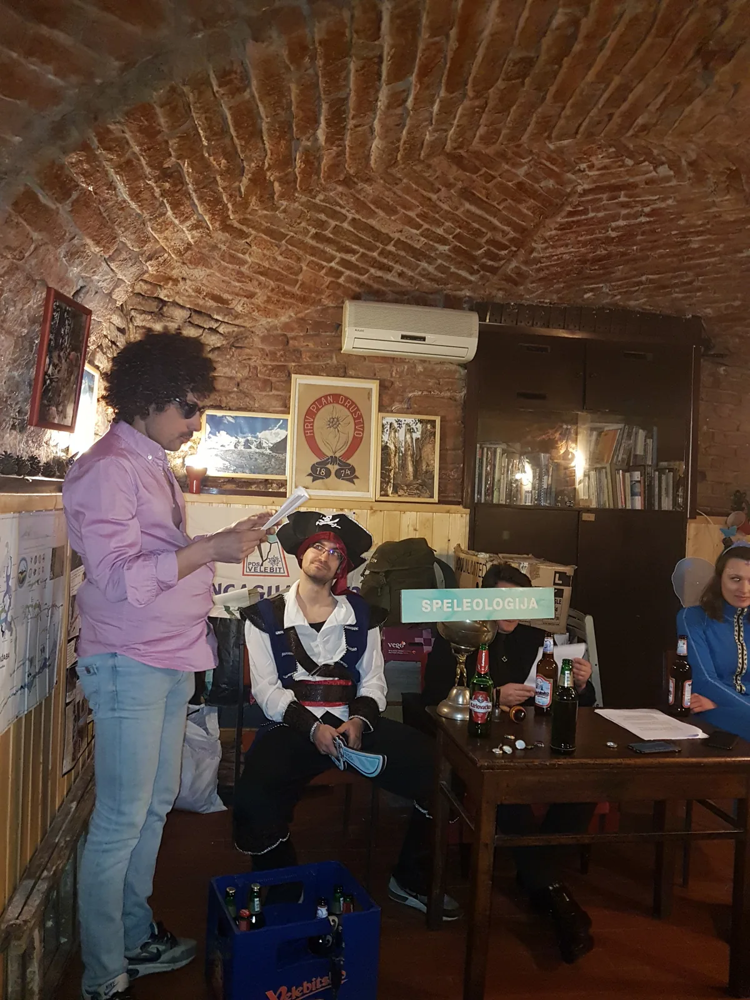

Godišnja skupština SO Velebit
Početak godine i fašničko vrijeme su termini za redovnu skupštinu našeg odsjeka. A ona nam uvijek izgleda veselo, što zbog ića i pića, a što zbog maškara...

U srijedu 27. veljače održana je redovita godišnja skupština našeg odsjeka i sada već tradicionalno pod maskama. Prostor u Radićevoj 23 fino se i šareno popunio, došli su nam i gosti iz SOŽ-a. Svoja izvješća podastrli su Pročelnik Luka Havliček, tajnik Marko Rakovac, oružaj Marijan Sutlović i arhivarka Marina Grandić, a ista su jednoglasno prihvaćena. Službeni dio završio je masovnim odlaskom na velebitaški gastro-stol kao neizostavnim tulumom. Hvala svima koji ovu skupštinu hodočastili svojim dolaskom, svojim kuharskim delicijama i alkoholnim proizvodima.
U nastavku donosimo tajnički izvještaj:Izvješće o sastancima u 2018. U 2019. godini u prostorijama PDS „Velebit“ održano je 35 formalnih sastanaka speleološkog odsjeka, iako nedostaje nekoliko digitaliziranih zapisnika sastanaka koje treba urediti, a koji, iako su se uredno objavljivali na sovelebit google grupi kad je to bilo moguće. Nekoliko sastanaka nije održano zbog preklapanja datuma sastanka sa istraživanjima tijekom raznih ekspedicija ili državnih praznika. Sadašnje rukovodstvo je nastojalo voditi prisutnost članova na sastancima, što upućuje na djelomičnu točnost vođenja sastanka prisutnosti jer zapisi postoje od ožujka do listopada. Nepravedno bi bilo govoriti o (fizički) najprisutnijem članu na sastancima SO Velebita, ali treba istaknuti da je Darko Jeras bio na najviše sastanaka SOV-a te spomenuti da je zabilježeno da 76 osoba koje su, više ili manje, pohodile sastanak srijedom u Radićevoj 23. Nažalost, evidencija prisutnosti nije nastavila voditi u kontinuitetu za što odgovornost preuzima tajnik speleološkog odsjeka.
Izvješće o članstvu i speleološkim aktivnostima u 2018.
Tijekom 2018. godine ukupno je bilo 85 speleoloških izleta što je 5 % manje u odnosu na broj izleta u 2018. godini. Izleti su provedeni s jednom ili više različitih svrha. Ukupno 60 izleta (neovisno o trajanju) su bila istraživanja speleoloških objekata u svrhu inventarizacije prirodnih vrijednosti RH odnosno izleta sa svrhom monitoringa i istraživanja, 12 turističkih posjeta, 4 izleta sa svrhom znanstvenih opažanja i izmjera te 6 izleta sa svrhom rekognosticiranja terena. Također, 8 izleta provedeno je u sklopu aktivnosti drugih speleoloških udruga te jedan izlet u sklopu inicijative „Čisto podzemlje“. Neki od izleta sa najvećim odazivom članova su bili na jami Mamet (svibanj 2018.) na kojem je sudjelovalo 18 članova odsjeka, istraživanje u jami Munižabi (lipanj 2018.) te istraživanja na području Gorskog kotara i jame Norvežanke kroz određeni period godine, a na kojima je sudjelovalo po 10 članova speleološkog odsjeka.
Najaktivniji članovi su Ana Bakšić (30 speleoloških izleta), Marko Rakovac (27 speleoloških izleta), Luka Havliček (24 speleološka izleta), Domagoj Čajko (22 speleološka izleta), Ela Kovač (25 speleoloških izleta), Marina Grandić (21 speleološki izlet), Mak Sedmak (20 speleoloških izleta), i tako dalje.
Članovi sa više od 10 speleoloških izleta su: Ana Lipovac, Marko Ličko, Darko Španja, Čedo Josipović, Gordan Bezjak, Darko Jeras, Stjepan Dubac, Edo Vričić, Tea Selaković, Marjan Prpić, Marijan Sutlović, Damir Lacković, Dalibor Paar, Pava Vidić i Marin Mašina.
Broj naših članova i dalje raste te iako imamo u Svijetu veliki broj članova, naše uže članstvo broji 121 član, kojih se četvrtina aktivno pojavljuje na sastancima i izletima Društva. Naše šire članstvo je mnogobrojno te broji više od tisuću članova i sastavljanje takvog zasebnog popisa zahtjeva intelektualni napor za što će tek doći vrijeme.
Tijekom 2018. godine organizirano je i 128 nespeleoloških izleta, pretežito planinarskih. Najviše se planinarilo na Sljeme i u Julijske Alpe dok su neki od značajnih osvojenih vrhova Storžić, Špik, Mangart, Hochspitze, kao i mnogi drugi u inozemstvu i tuzemstvu. Od inih izleta bitno je spomenuti Čari izvora, mnogobrojne izlete na Žicu kako tijekom tjedna i preko vikenda te skijanja na uređenim stazama, kako na Sljemenu tako i u inozemstvu. Mnogi naši članovi su pripadnici HGSS-a te su kao takvi također pohodili razne tečajeve, seminare i akcije spašavanja
Izvješće o ekspedicijama u 2018. Tijekom 2018 održane su dvije speleološke ekspedicije u organizaciji SO Velebita.
U razdoblju srpnju i kolovozu organizirana je speleološka ekspedicija „Slovačka jama 2018.“ koju su vodili Luka Havliček i Domagoj Čajko te vikend istraživanja Ponora Bunjevac koja je vodio Luka Havliček. U tim ekspedicijama su kompletirani speleološki nacrti te nastavljena uspješna suradnja sa javnim ustanovama koje upravljaju tim speleološkim objektima.
Naši članovi uspješno su pohodili speleološke ekspedicije drugih speleoloških društava u Hrvatskoj i u inozemstvu to na Šverdi u organizaciji SU Estavela, Crnopcu u okviru SO Željezničar, BiH u okviru SD Ponir iz Banja Luke te slovenskog Kanina u Julijskim alpama u okviru slovenskih speleoloških udruga.
Izvješće o izletima van granica Hrvatske u 2017. Članovi odsjeka posjetili speleološke objekte ili planinske lance u Maroku, BIH, Mađarskoj, Rumunjskoj, Francuskoj, Sloveniji itd. Izvješće o edukaciji, speleološkoj školi i speleološkom ispitu u 2018. te prisutnosti na komisijskim i međunarodnim seminarima.
48. zagrebačku speleološku školu PDS „Velebit“ uspješno je završilo 16 polaznika. Zvanje speleološkog pripravnika stekli su ispitom na Rokinoj u svibnju 2019., učeći i vježbajući prethodnih tridesetak dana.
Speleološkom ispitu HPS za 2018. godinu, kojeg je organizirao PDS Velebit, a koji se održao u siječnju 2018. na Žici u Zagrebu, pristupilo je i uspješno položilo za naslov speleolog 5 članova odsjeka i to: Valentina Plemenčić, Darko Španja, Dino Grozić i Katarina Koller.
U okviru istog vikenda održan je seminar o speleološkoj edukaciji te seminar o europskim projektima za speleološke udruge.
U HGSS stanicu Zagreb primljen je jedan član SO-a: Marijan Sutlović. Naši članovi su sudjelovali u školi krša u Postojni te na vježbi Civilne zaštite grada Zagreba u Blatu u svojstvu specijalističkih postrojebi grada Zagreba. Izdan je Velebiten broj 52. za tekuću godinu. Naši članovi su aktivno sudjelovali u organizaciji skupa speleologa Hrvatske koji se održao u Ogulinu u mjesecu studenom te na međunarodnim speleološkim skupovima u Rumunjskoj, Italiji i Austriji gdje su prezentirali rad i postignuća hrvatskih speleologa.
U Zagrebu, 27.02.2018. Tajnik SO PDS „Velebit“ Marko Rakovac I malo slikopisa: (M. Prpić, A. Bakšić) [gallery ids="2295,2296,2292,2288,2297,2313,2307,2304,2303,2301,2310,2291,2290,2314,2312,2311,2306,2302,2298,2299,2294,2289,2308,2305,2309,2300,2293" type="rectangular"] [gallery ids="2260,2269,2263,2274,2261,2258,2266,2265,2259,2264,2271,2278,2270,2276,2275,2272,2267,2268,2273,2277,2262" type="rectangular"]